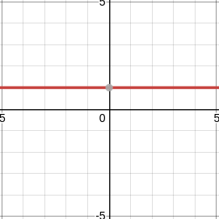
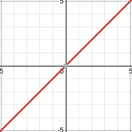
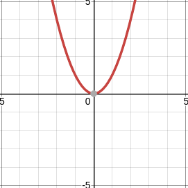
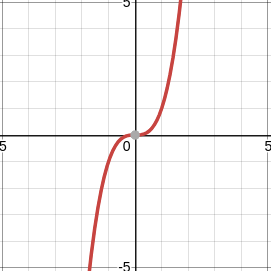
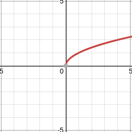
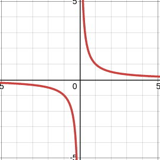
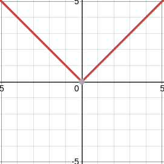
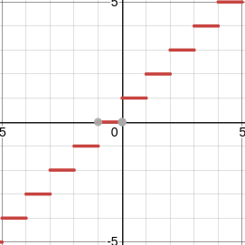
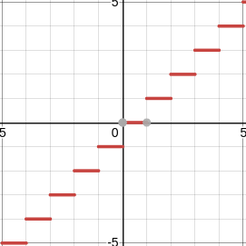
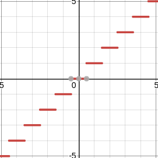

Parent Functions
Even functions satisfy $f(x) = f(-x)$.
(notice how even functions have even exponents (i.e. $\frac{n}{2} \in \mathbb{Z}$ in $y=x^n+c$))
For example, $y = |x|$ is even, and therefore it is symmetric on the y axis:
even-func
:
an even function
For example, $f$ is even, where $f(x) = -x^2-2x^2+4$, since $f(-x) = -(-x)^2-2(-x)^2+4 = -x^2+2x^2+4 = f(x)$.
Odd functions (奇関数) satisfy $f(x) = -f(-x)$.
For example, $y = x$ is odd, and therefore it is mirrored on both the $x$ and $y$ axes.
odd-func
:
an even function
$f$ is odd, where $f(x) = x^3+4x$, since $-f(-x) = -((-x)^3+4(-x)) = -(-x^3-4x) = x^3+4x = f(x)$.
Functions that are neither even or odd do not meet any of the requirements.
$f$ is neither, where $f(x)=\sqrt{x}$, since $-f(-x) = -(\sqrt{-x}) = -\sqrt{-x} \ne f(x)$, and since $f(-x) = \sqrt{-x} \ne f(x)$.
TODO: diagram
An asymptote is a line that the graph of a relation gets closer to, but never meets
TODO: diagram
Increasing and Decreasing Functions (possibly non-standard)
Increasing functions (増加関数) are functions where $y$ always increases when $x$ increases. In other words, the slope is always $\ge 0$. Another way to put it is that the derivative of the function never goes below 0.
incr
:
an increasing function
Decreasing functions (減少関数) are the oppoosite of increasing functions:
They are functions where $y$ always decreases when $x$ increases.
In other words, the slope is always $\le 0$.
Another way to put it is that the derivative of the function never goes above 0.
decr
:
a decreasing function
Common Parent Functions
| Name | Equation | Graph | Domain | Range | Symmetry | Asymptotes | $x$ Intercept | $y$ Intercept | Quadrants | Increasing |
|---|---|---|---|---|---|---|---|---|---|---|
| Constant Function | $f(x)=c$ |  | $D\{x\in \mathbb{R}\}$ | $R\{y\in \mathbb{R} | y=c\}$ | Even | None | None or all | $c$ | I and II | Constant |
| Linear Function | $f(x)=x$ |  | $D\{x\in \mathbb{R}\}$ | $R\{y\in \mathbb{R}\}$ | Odd | None | 0 | 0 | I and III | Increasing |
| Quadratic Function | $f(x)=x^2$ |  | $D\{x\in \mathbb{R}\}$ | $R\{y\in \mathbb{R} | y \ge 0\}$ | Even | None | 0 | 0 | I and II | Neither |
| Cubic Function | $f(x)=x^3$ |  | $D\{x\in \mathbb{R}\}$ | $R\{y\in \mathbb{R}\}$ | Odd | None | 0 | 0 | I and III | Increasing |
| Root Function | $f(x)=\sqrt{x}$ |  | $D\{x\in \mathbb{R} | x \ge 0\}$ | $R\{y\in \mathbb{R} | y \ge 0\}$ | Neither | None | 0 | 0 | I | Increasing |
| Reciprocal Function | $f(x)=\frac{1}{x}$ |  | $D\{x\in \mathbb{R} | x \ne 0\}$ | $R\{y\in \mathbb{R} | y \ne 0\}$ | Odd | $x=0$ and $y=0$ | None | None | I and III | Decreasing |
| Absolute Function | $f(x)=|x|$ |  | $D\{x\in \mathbb{R}\}$ | $R\{y\in \mathbb{R} | y \ge 0\}$ | Even | None | None | None | I and IV | Neither |
| Ceiling Function | $f(x)=\lceil x\rceil$ |  | $D\{x\in \mathbb{R}\}$ | $R\{y\in \mathbb{Z}\}$ | Odd | None | None | None | I and III | Increasing |
| Floor Function | $f(x)=\lfloor x\rfloor$ |  | $D\{x\in \mathbb{R}\}$ | $R\{y\in \mathbb{Z}\}$ | Odd | None | None | None | I and III | Increasing |
| Round Function | $f(x)=\lceil x\rfloor$ |  | $D\{x\in \mathbb{R}\}$ | $R\{y\in \mathbb{Z}\}$ | Odd | None | None | None | I and III | Increasing |